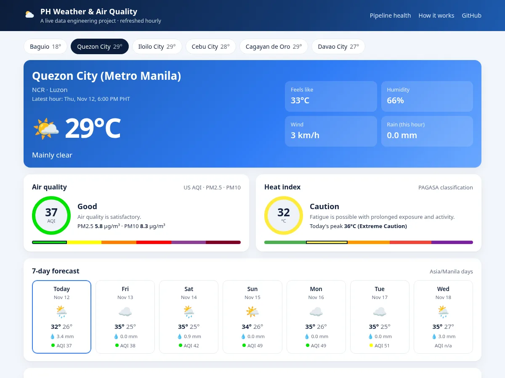

Live pipeline · Python, DuckDB, dbt, GitHub Actions, Plotly
Philippine weather and air quality pipeline
A pipeline that runs every hour on its own: it pulls weather and air quality for six Philippine cities, models and tests the data in dbt, and publishes it to a live weather app.
Open the live app Code on GitHub

The question
My other public projects are one-time pulls. Real pipelines run unattended, get the same records again and again, and have to say when something breaks. I wanted a project that shows that: scheduled ingestion, incremental loading with deduplication, tests that gate publishing, and a visible health status, all on data that changes every hour.
What I built
A Python job calls the free Open-Meteo forecast and air-quality APIs for Baguio, Quezon City, Cebu, Iloilo, Cagayan de Oro and Davao, with retries and backoff. It appends the raw hourly rows to a Bronze table in DuckDB, tagged with a run id and load time. Nothing in Bronze is ever updated.
dbt builds Silver and Gold on top. Each run re-sends the past day and the next seven, so the same city and hour arrives many times as forecasts change. The Silver models are incremental on a composite key (city and hour): they read only rows loaded since the last run minus a lookback window, rank them, and keep the latest record. It is the same latest-record-per-key pattern behind the fix for a dbt incremental key that was dropping ~97% of expected records at my day job. Gold adds an hourly fact, a daily rollup, a city dimension, US EPA AQI categories and PAGASA heat index bands.
Testing and monitoring
39 dbt tests run on every build: unique keys, not-null and relationship checks, accepted values and range checks on every measure. A reconciliation test confirms that every city-and-hour key in Bronze appears exactly once in Silver and that Gold matches Silver row for row. Source freshness warns after two hours without a load. The results are saved to a table and shown in the app's pipeline health panel, along with the last run time and rows loaded.
Orchestration and cost
GitHub Actions runs the whole chain at 17 minutes past every hour: ingest, dbt build, freshness, export to small JSON files, publish. If a run fails, it opens a GitHub issue and closes it again when a later run succeeds. Pull requests run pytest, sqlfluff and a full dbt build. The DuckDB file is kept between runs as a release asset rather than committed to git, and old raw loads are pruned, so the repository stays small. The app is hosted separately and only reads the published data, so the hourly job never redeploys it. It costs nothing to run.
Next
A Snowflake edition of the same design, using streams, tasks and MERGE, and a forecast-versus-actual accuracy model.